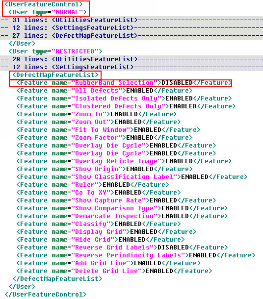
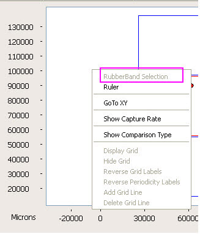

The RubberBand Selection menu
item can be deactivated for normal and restricted user types only.
Procedure
- Using a text editor, open
the dat-ini.xml file
and locate the DefectMapFeatureList entry (shown in Figure 1). This node is present under the UserFeatureControl/User
node.
Figure 1. DefectMapFeatureList
Node
- Enter ENABLED or DISABLED
for the RubberBand Selection entry for the different user types.
In the
example shown in Figure 2, the value of RubberBand Selection
is DISABLED for a restricted user. This means that the RubberBand Selection menu
item in the Defect Map window is unavailable for all restricted
users. (The option is dimmed in the menu.)
Figure 2. RubberBand Selection
Dimmed
Note the following:
If a feature is deactivated
for normal users then, it is also deactivated for restricted users.
All Defect Map features
are enabled for privileged users.